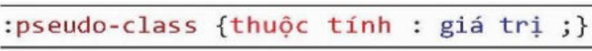
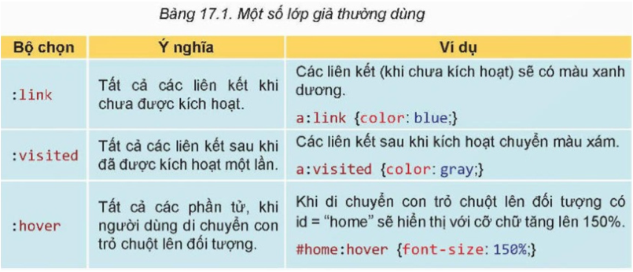
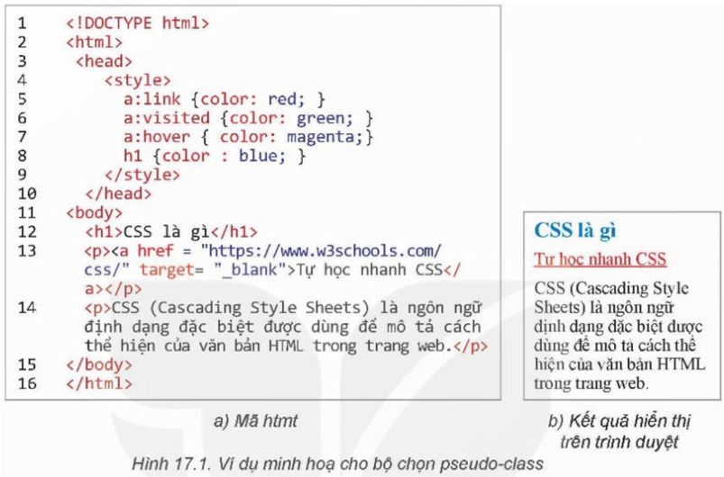
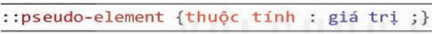
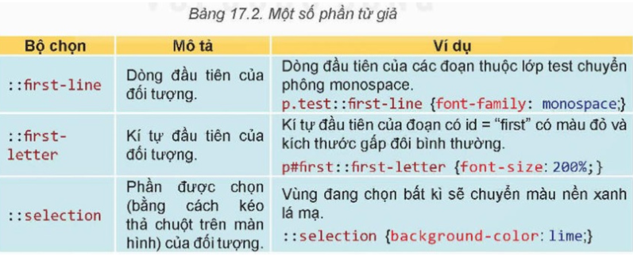
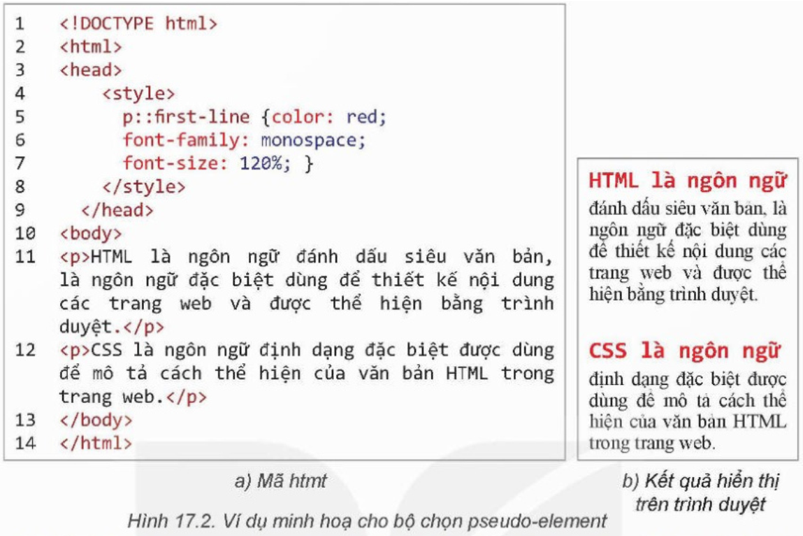
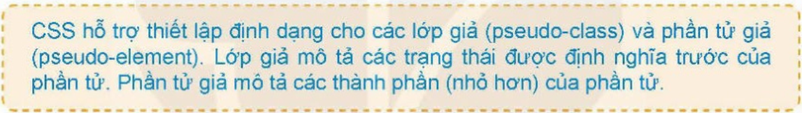
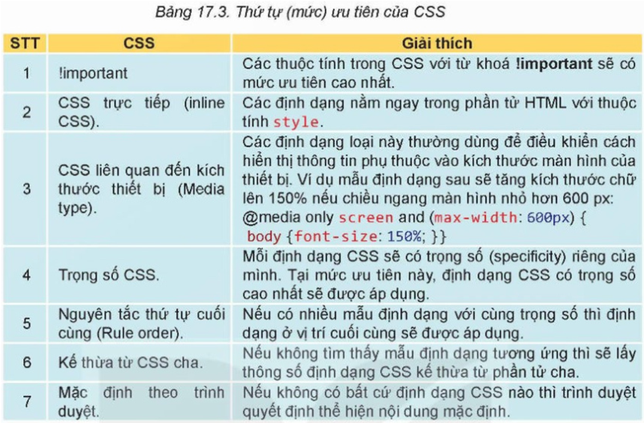
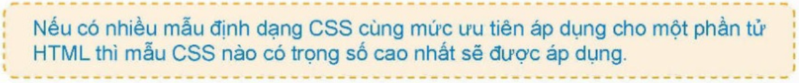

1. KIỂU BỘ CHỌN DẠNG PSEUDO-CLASS VÀ PSEUDO-ELEMENT
a. Bộ chọn pseudo-class
Pseudo-class (lớp giả) là khái niệm chỉ các trạng thái đặc biệt của phần tử HTML. Các trạng thái này không cần định nghĩa và mặc định được coi như các lớp có sẵn của CSS. Trong CSS, các lớp giả quy định viết sau dấu “:” theo cú pháp:

Ví dụ trong Hình 17.1 mô tả CSS thiết lập định dạng cho các trạng thái đặc biệt của phần tử a chứa liên kết. Các trạng thái này gọi là “lớp giả”. Liên kết “Tự học nhanh CSS” sẽ được thiết lập màu đỏ mặc định. Nếu đã được kích hoạt, liên kết sẽ tự động chuyển màu xanh lá cây. Khi di chuyển con trỏ chuột lên liên kết thì dòng chữ liên kết đổi màu hồng.
b. Bộ chọn kiểu pseudo-element
Pseudo-element (phần tử giả) là khái niệm chỉ một phần (hoặc một thành phần) của các phần tử bình thường. Các phần này có thể coi là một phần tử giả và có thể thiết lập mẫu định dạng CSS. Quy định phần tử giả viết sau dấu “::” theo cú pháp:

Ví dụ trong Hình 17.2 mô tả CSS thiết lập định dạng cho một phần hoặc một thành phần của phần tử p (được gọi là phần tử giả). CSS sẽ tự động tạo khuôn cho dòng đầu tiên của tất cả các phần tử p của trang web với màu đỏ, phông chữ có độ rộng đều nhau và có kích thước lớn hơn 1,2 lần so với bình thường. Chú ý dòng đầu tiên này không phụ thuộc vào văn bản mà chỉ phụ thuộc vào độ rộng của cửa sổ trình duyệt.

2. MỨC ĐỘ ƯU TIÊN KHI ÁP DỤNG CSS
Khi có nhiều mẫu định dạng có thể áp dụng cho một phần tử HTML nào đó trên trang web, CSS sẽ áp dụng định dạng theo thứ tự ưu tiên. Trong các bài học trước, em đã biết hai quy tắc ưu tiên là tính kế thừa và quy định về thứ tự cuối cùng (cascading). Trên thực tế quy định về chọn mẫu định dạng ưu tiên từ cao xuống thấp của CSS được mô tả trong Bảng 17.3.
 Như vậy theo nguyên tắc trên, nếu có một dãy các mẫu định dạng CSS cùng có thể áp dụng cho một phần tử HTML thì tính kế thừa CSS và nguyên tắc thứ tự cuối cùng được xếp dưới trọng số CSS, tức là khi đó CSS sẽ tính trọng số các mẫu định dạng,
cái nào có trọng số lớn hơn sẽ được ưu tiên áp dụng.
Cách tính trọng số của CSS rất đơn giản dựa trên giá trị trọng số của từng thành phần của bộ chọn (selector) trong mẫu định dạng.
Trọng số của mẫu định dạng sẽ được tính bằng tổng của các giá trị thành phần đó. Giá trị của các thành phần của bộ chọn theo quy định trong Bảng 17.4.
Trở lại với ví dụ của Hoạt động 2, cụm từ “Tin Học 12” là nội dung của phần tử p.
Có hai định dạng CSS có thể áp dụng cho phần tử. Định dạng phía trên có trọng số 10 (vì là pseudo-class), định dạng phía dưới có trọng số 1 (vì là element).
Do đó định dạng phía trên sẽ áp dụng và cụm từ đó sẽ có màu xanh lá cây.
Hoạt động 2:
